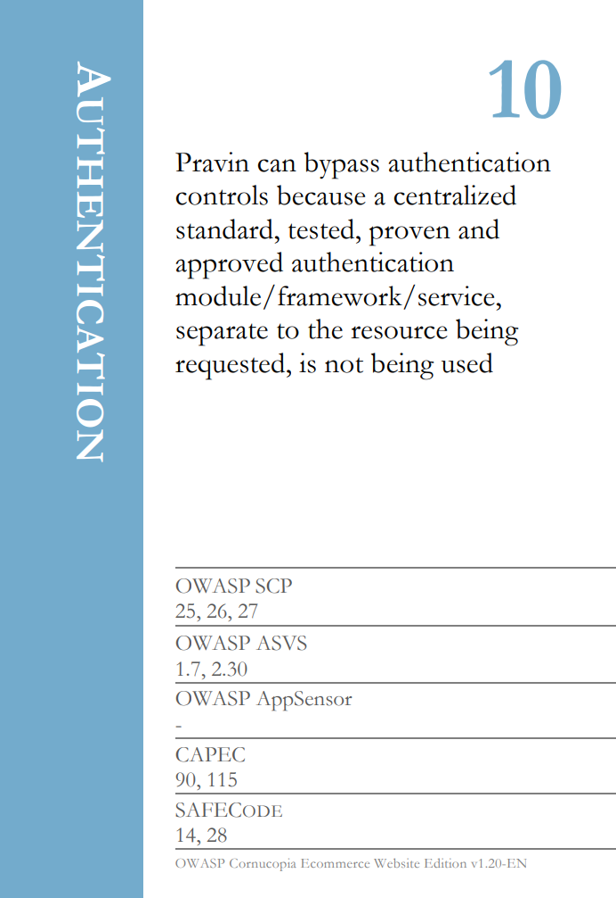
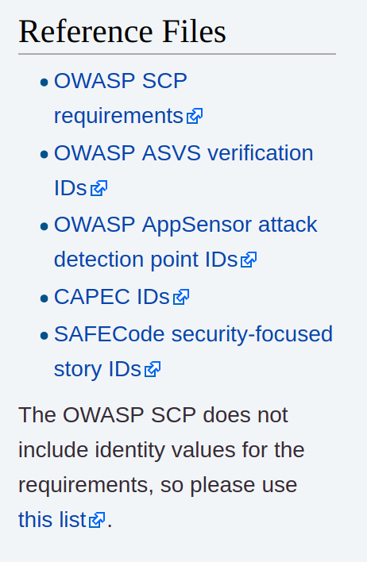

OWASP Cornucopia
August 7, 2019
Since the CyberCamps ended last week, I have had time to begin preparing for the Fall semester at Cabrillo College. In that time, I have also been gathering new resources and realigning the baycyber.net website for the academic year's vision and goals. In that time, I came across OWASP Cornucopia, a card game that piqued my interest. After getting the college to pay for the printing of the cards, I learned how to play.

Though the site looks overwhelming, the actual game is not difficult. This video helped me understand how to play the game. For those who don't have 40 minutes to listen, here is the breakdown of the game for you to play in your classroom, job, etc.
Things you need:
- OWASP Cornucopia Cards
- Scoresheet
- A data flow map of a Web Application you and your team has created, a fully detailed network topology, or detailed map of a server.
The last bullet point is the most important; this game does work well if you don't have a device, system or infrastructure you're analyzing.
Rounds
Once you have all three, shuffle the cards and deal the entire deck to all players evenly. At this time, the group designates a starting person as well.
Everyone looks at their cards to see which threat written in the card is possible on the network/device/application in play. The first person places a card down on the table.
The person who put the card down must explain where, on what device or process, would this be a problem. In our case, could Pravin bypass authentication controls (such as username/password) to a separate resource (such as Samba, FTP, ssh) on the Mail server, SQL Database or Web Configuration?
If this is accepted as plausible by the group, the next person puts down a card of the same suite which is higher than the 10 the first person's. If the second person does not have an Authentication suite card, they can put down a card from another suite. If no one has a higher card that can beat this, the winner gets a point.
This process repeats until all cards are used.
Post Game
After the cards are spent, the scores are tallied and the threats are organized by their risk level. This final product can now be used to present findings, become tickets for the team to resolve, etc.
Few Pointers
I suggest using systems or applications the players are really familiar with or they built from scratch, as these will bring more fruitful conversations and debates which will lead to a more thorough threat modeling exercise.
Another good tip is to read through the documentation they linked (which is also referenced on the cards). These reference files will help in understanding where the card scenarios come from and help players gain a better understanding to what kind of threat they're talking about.
